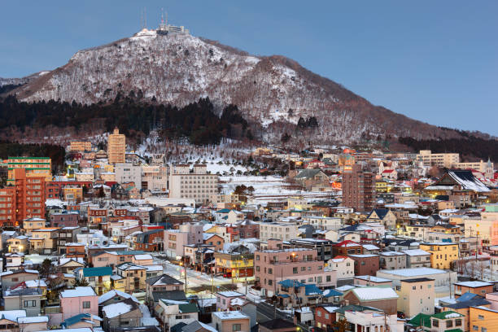

Hakodate este un oraș situat pe insula Hokkaido, faimos pentru priveliștile sale nocturne și istoria sa maritimă.
Top 10 Atracții din Hakodate:
- Turnul Goryokaku
- Templul Daikokujin
- Parcul Goryokaku
- Zona Istorică Motomachi
- Sanctuarul Hakodate
- Strada Red Brick Warehouse
- Muzeul Maritim Hakodate
- Ferry-ul Hakodate
- Observatorul Mount Hakodate
- Piata Dimineata Hakodate